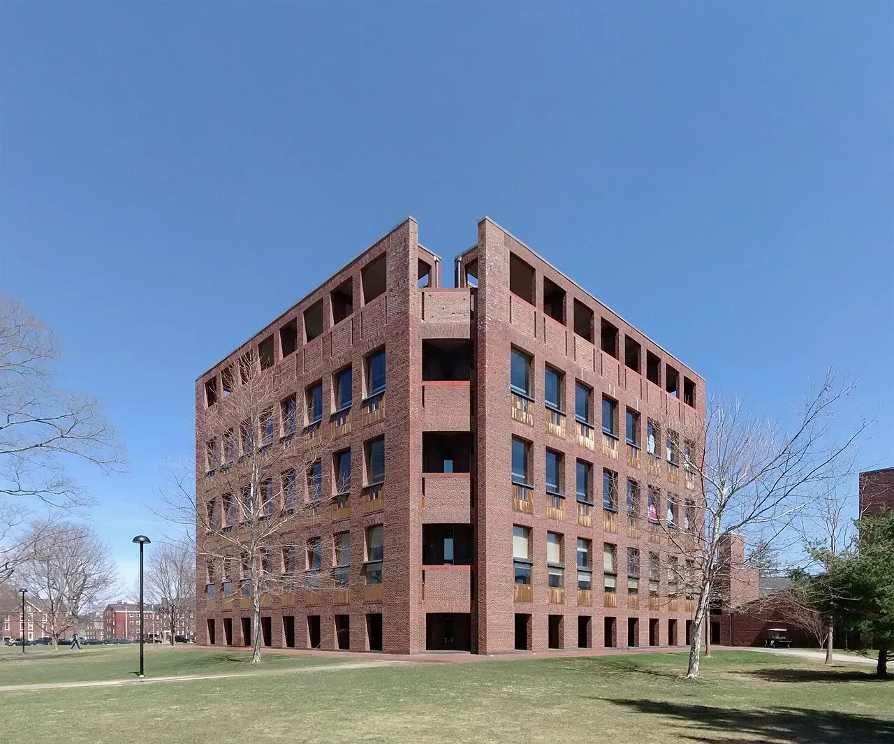
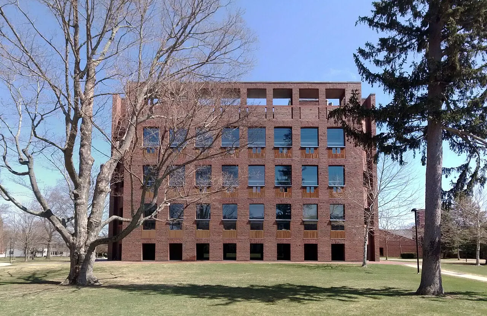
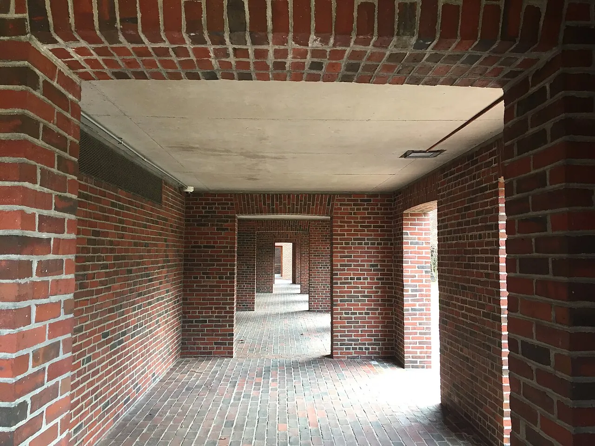
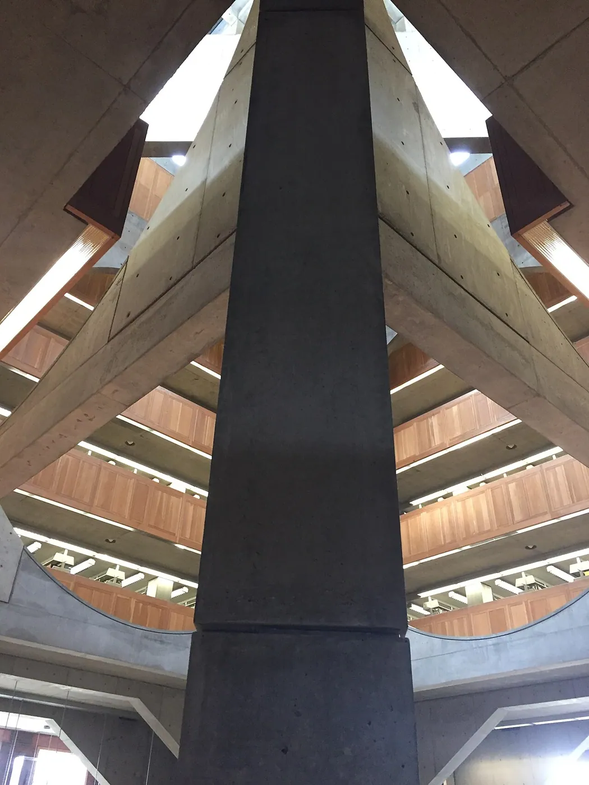
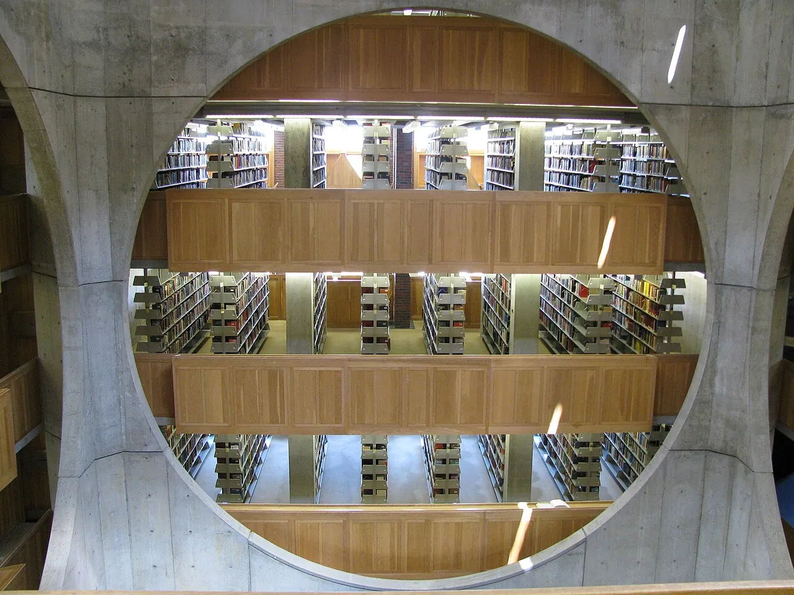
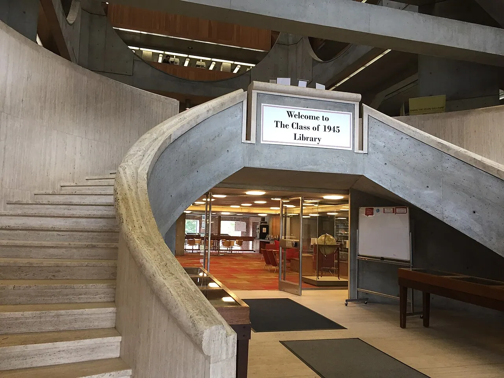
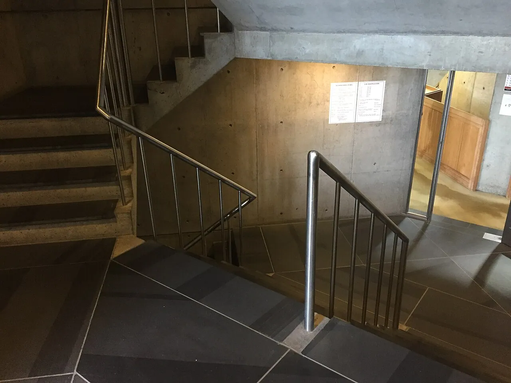
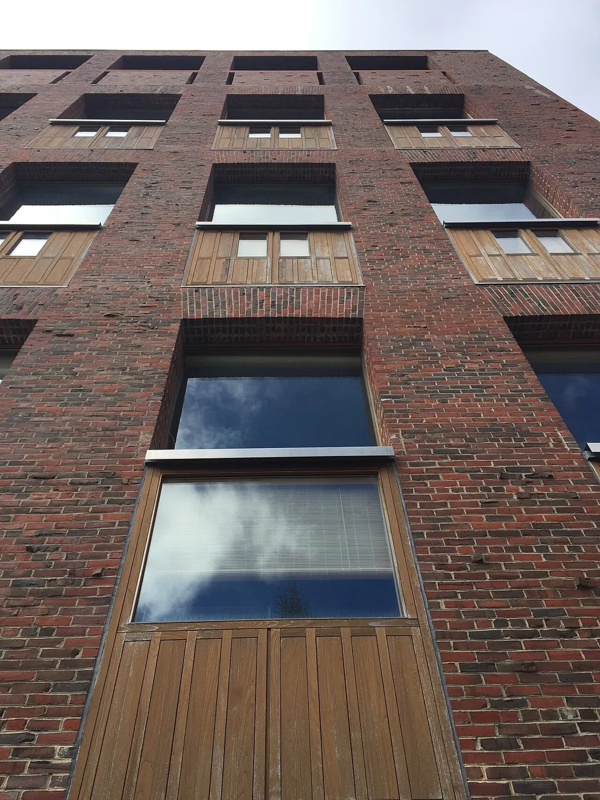

1/8 · Exterior · Phillips Exeter Academy Library, Louis Kahn, Exeter, New Hampshire, AprPhoto: Gunnar Klack · CC BY-SA 4.0 · source
2/8 · Exterior · Phillips Exeter Academy Library, Louis Kahn, Exeter, New Hampshire, AprPhoto: Gunnar Klack · CC BY-SA 4.0 · source
3/8 · Exterior · Arcade on ground floor of Phillips Exeter Academy LibraryPhoto: Cysj1024 · CC BY-SA 4.0 · source
4/8 · Interior · Atrium corner of Phillips Exeter Academy LibraryPhoto: Cysj1024 · CC BY-SA 4.0 · source
5/8 · Interior · Phillips Exeter Library, New Hampshire - Louis IPhoto: Pablo Sanchez from Prague, Czech Republic · CC BY 2.0 · source
6/8 · Interior · Curved travertine double staircase at library entrancePhoto: Cysj1024 · CC BY-SA 4.0 · source
7/8 · Interior · One of the staircases in the libraryPhoto: Cysj1024 · CC BY-SA 4.0 · source
8/8 · DetailPhoto: Cysj1024 · CC BY-SA 4.0 · sourceEducation · Late modernism
Phillips Exeter Academy Library
Louis Kahn · Exeter, United States · 1971
Key featuresBooks around a central atrium framed by huge circles; reading carrels at the brick edge.
- Architect
- Louis Kahn
- Place
- Exeter, United States
- Year
- 1971
- Typology
- Education
- Movement
- Late modernism
- Region
- Americas
See it on the wall


c.jpg){kind=link}